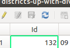
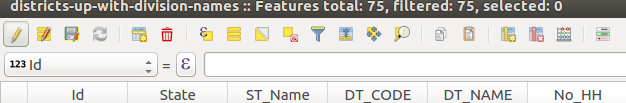
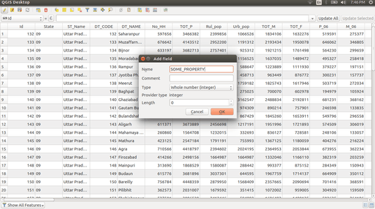

Part A - Use QGIS tool to add DIVISION property
- Load districts shapefile (
.shp) in QGIS tool
- Click Layer on toolbar on top and select
Attribute Table
- Toggle editing mode (top left-most)

- Click New Field option (4th from the right on the toolbar)

- Name your new field

- View and edit the new field by clicking on specific cells
- Save and Export. On the bottom left of QGIS, in Layers Panel click
Save As, choose a format of your choice.
Part B - Join layers using DIVISION property - mapshaper.org
- Load the
GeoJSON file from above in mapshaper.org
- Enable information view (i icon on the right panel)
- Enable console mode (click console on top right)
- (Optional based on the
GeoJSON) Filter specific fields - run this in console
filter-fields Id,State,ST_Name,DT_CODE,DT_NAME,DIVISION
- Merge district layers based on DIVISION name
dissolve2 fields=DIVISION copy-fields=Id,State,ST_Name
Export this new file as TopoJSON and use.